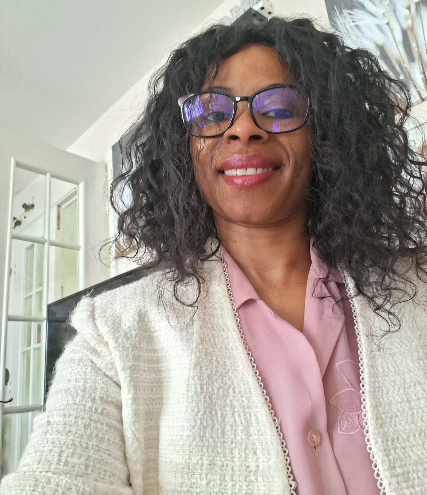

Quem sou eu
Melanie Mata
Nascida em 7 de outubro de 1978
Sou psicóloga formada pela Universidade Lusófona (2008) e tenho certificação em Understanding Autism (Mind in the UK).
Trabalhei com crianças em Moçambique (After School), com adultos no Reino Unido, e desenvolvi paixão pelo autismo.
Hoje ofereço acompanhamento online com estratégias individualizadas para famílias e também trabalho diretamente com crianças em ambientes escolares ou domiciliares.
Minha Visão para o Futuro
Meu sonho é aplicar minha experiência em locais menos favorecidos, onde o acesso a informações e apoio ainda é limitado.